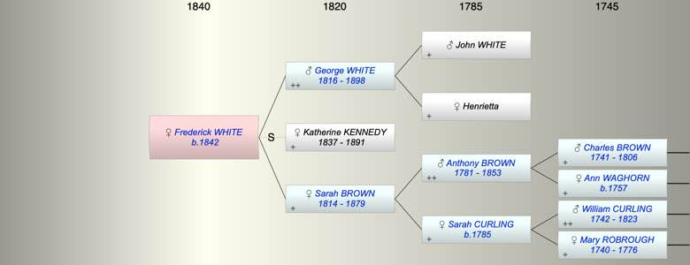

| [Index] |
| Frederick A WHITE (1842 - ) |
|  |
| b. 1842 at St John, Westminster |
| Parents: |
| George Frederick WHITE (1816 - 1898) |
| Sarah BROWN (1814 - 1879) |
| Siblings (6): |
| Sarah S WHITE (1843 - ) |
| Agnes WHITE (1844 - 1915) |
| Anna Rosa WHITE (1846 - 1930) |
| Henritta WHITE (1848 - ) |
| Adelaide WHITE (1850 - ) |
| Constance Lucy WHITE (1853 - 1942) |
| Events in Frederick A WHITE (1842 - )'s life | |||||
| Date | Age | Event | Place | Notes | Src |
| 1842 | Frederick A WHITE was born | St John, Westminster | ex 1851 census | ||
| 03 May 1879 | 37 | Death of mother Sarah BROWN (aged 64) | Note 1 | ||
| 13 Jun 1891 | 49 | Death of step mother Katherine Maria KENNEDY (aged 54) | Note 2 | ||
| 11 Aug 1898 | 56 | Death of father George Frederick WHITE (aged 81) | Brompton Cemetery see photo | ||
| Note 1: buried Brompton Cemetery see photo |
| Note 2: Aged 54 Buried Brompton Cemetery see photo |
| Created on a Mac™ using iFamily for Mac™ on 8 Oct 2023 |